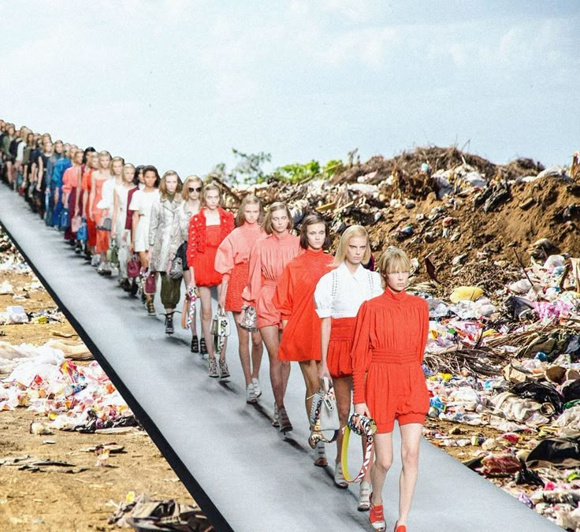

Psicologia del consumatore
Il successo del fast fashion non si spiega solo con la sua struttura industriale efficiente, ma anche — e soprattutto — con il modo in cui intercetta i meccanismi psicologici del consumatore moderno. Capire perché acquistiamo certi capi, così frequentemente e spesso senza reale bisogno, è fondamentale per comprendere il ruolo della moda nella società contemporanea.
Perché compriamo fast fashion
LEGGI
